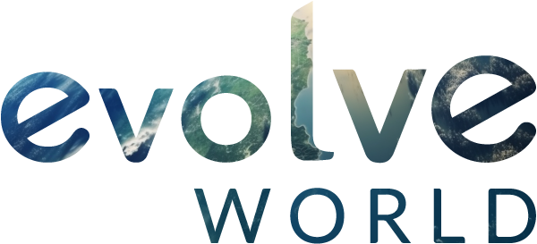

James Bolden
I build the spaces where consciousness, community, and living systems meet.
I'm a creative technologist working across parametric geometry, web systems, and human–AI collaboration. Through my studio IRIS Cocreative and a constellation of projects, I collaboratively design and build digital places that change how people think and relate together.

- Newly married — and carrying a new name we made together. (story below)
- Developing the Digital Pattern Language toward a first public release.
- Designing gathering spaces for the Holomovement community.
- Reading, walking, and letting the mountains do their work.
First entry in the Journal
Two names became one.
This summer I married the love of my life — and instead of one of us taking the other's name, we wove a new one from both. The story of how Bolden came to be: a name neither inherited nor given, but made together, the way we hope to make everything else.
IRIS Cocreative
Founder & Creative Director
IRIS is a small, distributed studio — designers and engineers building brand systems, web platforms, and AI-assisted tools for purpose-driven companies, NGOs, and thought leaders. I direct the creative and technical vision and stay close to the build.
The studio is the trunk; most of the projects below grow out of it.
IRIS Lab
Research & Development
IRIS Lab is where we test ideas before they become products: circular and radial interfaces, sensemaking tools, and AI as a genuine thinking partner. It's the home of the Digital Pattern Language (below) and other open experiments.
Our Awakening World
Creative project
Our Awakening World is a living, growing atlas of the people and communities catalyzing collective awakening worldwide — a way to see the movement and find each other within it. I designed and built the digital home for the project.
Holos
Platform Design
Holos is the digital commons for the Holomovement — a network of people and organizations aligning around the idea that we're part of one interconnected whole. The platform helps members find each other, convene, and act together.
Digital Pattern Language
James doesn't just design websites — he listens for what a community is trying to become, and builds the room for it.
Working with IRIS felt less like hiring a studio and more like gaining a thinking partner. The result exceeded what we knew how to ask for.
Rare to find someone fluent in both the sacred and the shipping deadline. James is both, without compromise on either.
In collaboration with



Holomovement Emergence EducationAwakening Together — Featured Artist
James was honored to be the featured artist for the spring issue of Artist of Possibility Magazine, published by Emergence Education Press.
Love the System — Ep. 22
A long-form conversation with host Layman Pascal on integral thinking, systems, and designing for collective intelligence.
Evolutionary Leaders Circle
James's profile in the Evolutionary Leaders circle — a global network of individuals advancing conscious evolution and planetary flourishing.
James Bolden, IRIS Cocreative
A conversation on purpose, the Holomovement, and building digital spaces for collective awakening.
In a Single Bound
It's just him, open space and a landscape full of possibilities.
"Loosen up. Don't think — explore," [Bolden] said. "Use what's there in unconventional ways."
Want to talk through a project, a collaboration, or an idea taking shape? Pick the length that fits the conversation.